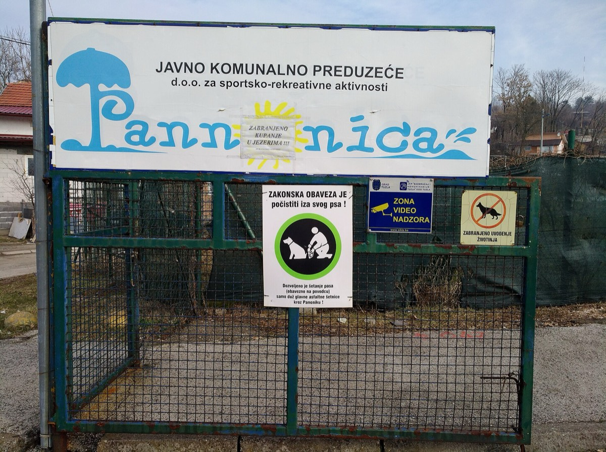
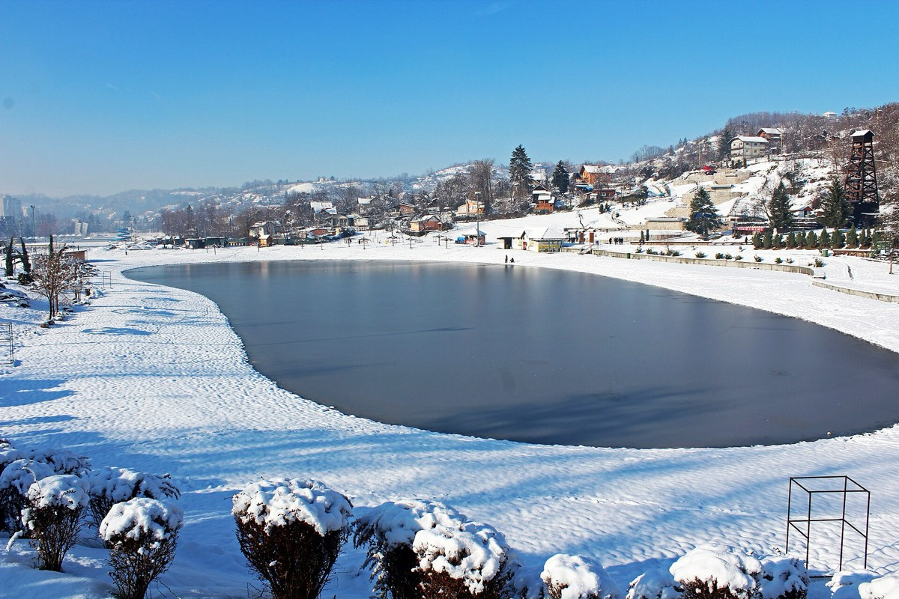

Panonska jezera u Tuzli su jedinstven prirodni fenomen u Bosni i Hercegovini. Nastala su slijeganjem tla iznad iscrpljenih rudnika soli, što je rezultiralo pojavom slanih jezera na površini. Solni sadržaj vode sličan je onom u Mrtvom moru, a jezera su udaljena svega 1,2 km od centra grada, što ih čini najpristupačnijom gradskom plažom u regiji.
Kako su nastala Panonska jezera
Tuzla je grad koji počiva doslovno na sloju soli. Rudnici soli ispod grada exploatisani su vijekovima, a od 19. vijeka industrijskim tempom. Kada su rudnici ispunjeni vodom i napušteni, tlo iznad počelo je tonuti, formirajući udubine koje su se s vremenom punile vodom. Ta voda, prolazem kroz solne slojeve, postala je slana. Danas Panonska jezera imaju više od jednog jezera, s kupačkim plažama, promenadama i sportskim sadržajima duž obale.
Ovo je proces koji se zove "sufozija" ili "dolina slijeganja" i Tuzla je jedan od rijetkih primjera u Europi gdje je urbana sredina izgrađena uz ovakav fenomen.

Kupanje na jezerima
Kupanje je dozvoljeno na označenim zonama i besplatno ili uz minimalnu naknadu za ulaz na uređene plaže. Voda ima visok postotak soli, što pruža prirodnu plovnost, sličnu onoj u Mrtvom moru. To ga čini popularnim za opuštanje na vodi i poznato je po ljekovitim svojstvima za kožu i zglobove.
Visoki sadržaj soli u Panonskim jezerima pruža prirodnu plovnost i ljekovita svojstva prepoznata i u turističkim vodičima regiona.
Sezona kupanja traje od maja do septembra. Najljepše je posjetiti jezera ujutro ili u kasnim popodnevnim satima, kada je sunce manje agresivno i gužva manja. Preporučuje se donijeti vlastite peškire i suncobrane, mada ih ima u iznajmljivanje na plažama.
Šta ponijeti
- Kupaći kostim i peškir (ili iznajmiti na licu mjesta)
- Zaštitnu kremu SPF 30 ili viši, posebno u julu i augustu
- Vodu i lagane grickalice (na promenadi ima kafića)
- Sanduk ili torbu za mokru odjeću
- Gotovinu za ulaz i eventualno piće ili ručak
Kako doći do jezera
Jezera su udaljena 1,2 km od centra Tuzle i lako dostupna pješice za 15 minuta. Taxi ili rideshare dolaze do ulaza za manje od pet minuta. Autobusne linije br. 3 i br. 7 prolaze nedaleko od ulaza u park Slana Banja. Parking je dostupan u blizini, ali ljeti može biti popunjen u podne.

Šta vidjeti u okolini
Park Slana Banja okružuje jezera i nudi šetnice, klupe i sportske terene. U blizini su restorani s pogledom na vodu, kafane i prodavnice suvenira. Centar Tuzle, s trgom, muzejom i kafanama, udaljen je 15 minuta pješice. Ako planirate ostati duže, pogledajte naš vodič šta posjetiti u Tuzli za još ideja.
Gdje odsjesti blizu Panonskih jezera
Za posjetitelje koji planiraju jedno ili više noćenja, Apartmani Elegance na adresi Donji Mosnik 7 idealni su izbor. Smještaj je na svega 1,2 km od Panonskih jezera i 900 m od centra Tuzle. Dostupna su 4 savremeno opremljenih apartmana (od studija do trosobnog), s besplatnim parkingom, Wi-Fi-em i grijanjem/klimom. Rezervacija je direktna, bez provizije.
Cijene kreću od 40 EUR po noćenju za dvosobni apartman do 60 EUR za Deluxe apartman za do 6 osoba. Provjerite dostupnost i cijene za svoje datume.